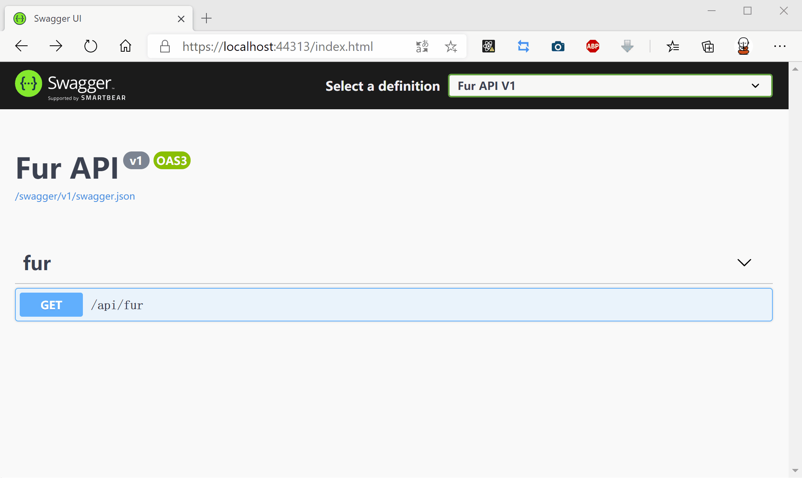

动态 WebAPI
什么是控制器
简单来说，控制器是一个承上启下的作用，根据用户输入，执行响应行为（动作方法），同时在行为中调用模型的业务逻辑，返回给用户结果（视图）。

控制器的表现形式
在 MVCXE 中，控制器有两种表现形式：
引入MVCXE单元
uses MVCXE;
Mvc（带视图）
type
TMvcController = class(TController)
public
function Index: string;
end;
implementation
function TMvcController.Index: string;
begin
Result := View;
end;
WebAPI（RESTful API）
type
TSysUserResult = record
code: Integer;
data: TSysUserData;
msg: string;
end;
[Route('user/profile')]
TMyWebApi = class(TWebApi)
public
function GET: TSysUserResult;
end;
implementation
function TMyWebApi.GET: TSysUserResult;
begin
Result.code := 0;
Result.msg := '';
end;
Mvc 控制器和 WebAPI 控制器最大的区别是 WebAPI 控制器不带 视图 和通过 请求谓词和路由地址响应行为。
控制器的约定
在 MVCXE 中，MVC与WebAPI都需要遵循一些约定
MVC 约定
- 控制器类必须继承 TController 或间接继承
- 动作方法不区分HttpVerb，如果要区分必须贴有 [HttpMethod] 特性，如：[HttpGet]
- 无需手动配置 [Route] 特性，支持更加灵活的配置及自动路由生成
- 生成路由地址时会自动截取控制器名称 T和Controller 之间的内容，同时也会去掉动作方法匹配的 HttpVerb 谓词，如 GET，POST，DELETE，PUT 等
- 支持返回字符串或流对象，如果返回类，会序列化成json或xml
- 支持 GET、HEAD 请求自动转换 类类型参数
WebAPI 约定
- 控制器类必须继承 TWebApi 或间接继承, 具备原有的 TController 所有功能
- 无需手动配置 [HttpMethod] 特性，同时支持一个动作方法多个 HttpVerb
- 无需手动配置 [Route] 特性，支持更加灵活的配置及自动路由生成
- 支持返回泛型接口，泛型类
- 和 Swagger 深度结合，提供极其方便的创建 Swagger 分组配置
- 支持 Basic Auth，Jwt，ApiKey 等多种权限灵活配置
- 支持 GET、HEAD 请求自动转换 类类型参数
注册动态 MVC/WebAPI 服务
MVCXE应用构建时，我们可将应用代码写在不同的Project,他们生成bpl放于Web应用的根目录中，MVCXE会自动发现bpl中的控制器，无需手动注册。
可在launchSettings.json中进行相关设置
{
"packages": {
"EnabledPackageScan": false,
"IgnorePackageFiles": ["MVCXE.Core.bpl","inet280.bpl","rtl280.bpl","vcl280.bpl","xmlrtl280.bpl","IndyCore280.bpl","IndyProtocols280.bpl","IndySystem280.bpl","dbrtl280.bpl"],
"ExternalPackages": [{
"Name": "Test1",
"Area": "test",
"RoutePrefix": "test"
}]
}
}
EnabledPackageScan=true
MVCXE会自动扫描加载除IgnorePackageFiles外的所有bpl文件
EnabledPackageScan=false
MVCXE会加载ExternalPackages所设定的bpl列表，Name为bpl文件名(不带扩展名.bpl)，Area是控制器配置文件及视图所在目录如果为空使用根目录，RoutePrefix是路由生成的前缀目录
第一个例子
创建一个 TMyWebApi 类继承 TWebApi，并在这个类中编写一个 Get 方法。
type
TMyWebApi = class(TWebApi)
public
function GET: string;
end;
implementation
function TMyWebApi.GET: string;
begin
'Hello '+Self.ToString;
end;
如下图所示，一个 WebAPI 接口就这么生成了。 
动态 WebAPI 原理解析
MVCXE 框架会在应用启动时注册 类名为T{?}Controller或T{?}WebApi控制器特性提供器，该提供器继承自TController或TWebApi类。
请求谓词默认约定
动作方法名
- 以 Post/Add/Create/Insert/Submit/Change 开头，则添加
[HttpPost]特性。- 以 GetAll/GetList/Get/Find/Fetch/Query 开头，则添加
[HttpGet]特性。- 以 Put/Update 开头，则添加
[HttpPut]特性。- 以 Delete/Remove/Clear 开头，则添加
[HttpDelete]特性。- 以 Patch 开头，则添加
[HttpPatch]特性
如果不在上面约定中，
MVC忽略，WebAPI则默认添加[HttpPost]特性。
路由地址默认约定
MVCXE 框架的路由格式(默认转换为小写路由地址)是：前缀/模块名/动作方法名/参数
前缀
如果在launchSettings.json设置了该动态WebAPI所在bpl的RoutePrefix，以该设定为前缀
否则没有前缀
模块名
模块名取值是控制器类名类名为T{?}Controller或T{?}WebApi的{?}部分，如果设置了控制类的属性[Route('{自定义模块名}')]则用自定义模块名
动作方法名
动作方法名取值控制器类public的函数或方法名，默认去除以 Post/Add/Create/Insert/Submit，GetAll/GetList/Get/Find/Fetch/Query/Search，Put/Update，Delete/Remove/Clear，Patch 开头的字符串。
如果设置了函数或方法的属性[Route('{自定义动作方法名}')]则用自定义动作方法名
参数
如果有参数这部份，以/分割为多个参数，按顺序传入动作方法对应的函数参数中